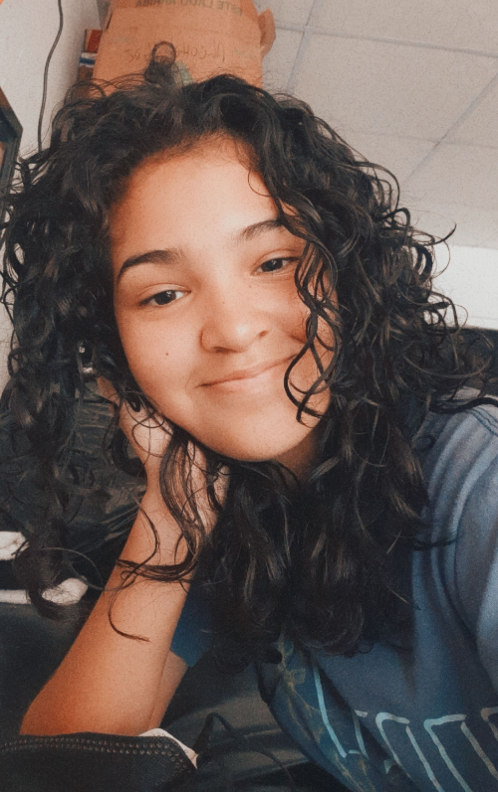

Construyendo soluciones digitales con pasión y precisión.
Ver Proyectos¡Hola! Soy Delanis Tejeira y tengo 1 año de experiencia en el desarrollo web. Mi enfoque principal está en la creación de elementos para la Ingeniería Civil. Siempre estoy aprendiendo nuevas tecnologías que puedan ayudarnme en la resolución de problemas en el área de la Ingeniería Civil.
Infografia de la Historia de la Programación y hexagrama de la programación con sus tipos y conceptos.
Segunda tarea de elaboración de programas en Lenguaje C, pseudocódigos y diagramas de flujo de los mismos.
Primera elaboración de programas en Lenguaje C, pseudocódigos y diagramas de flujo de los mismos.
Primer parcial contrareloj, incluye pseudocódigos, diagramas de flujo y Lenguaje C.
Elaboración de análisi FODA acerca de las diferencias entre Lenguaje C y Python. Además una introducción a la maquina virtual y Cisco Packet Tracer.
Maquina virtual y Cisco Packet Tracer, creación de codigos en Lenguaje C con su diagrama de flujo.
Creación de base de dato,código Python, RED LAN e investigación acerca de MSQL.
Creación de base de datos para la empresa Chinos Cafe, RED LAN de Chinos Cafe e investigación acerca de MSQL.